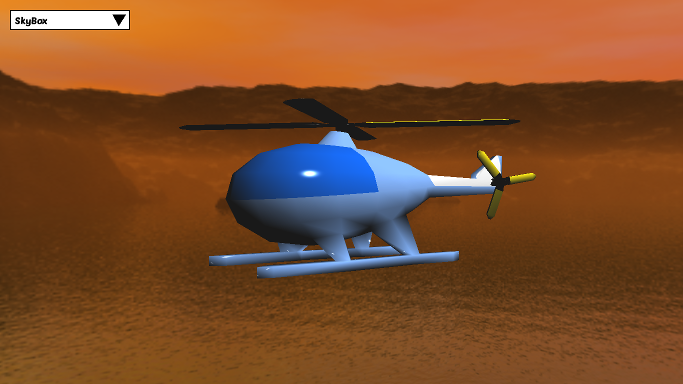

MonoGame Effects
MonoGameEffects is a port of the excellent HLSL and Effects Tutorials from RB Whitaker. It aims to demonstrate the usage of custom effects in MonoGame. Currently the Windows Store, Windows Phone and WindowsGL platform are supported. Other OpenGL based platforms, such as Android and iOS, should also work based on the WindowsGL code. However, they aren't tested.
The source code is maintained in GitHub.

Pre-requisites
Read the original HLSL and Effects Tutorials. The shaders and game code require some small changes for MonoGame, but the theory still applies to the new environment and it is necessary in order to understand how effects work. This information won't be repeated here.
Download one of the development builds from MonoGame downloads page. This contain the MonoGame Content Pipeline tool, which isn't available in the 3.2 release. The MonoGame Pipeline Tool will be used for creating the content files. This is a Windows only tool and its usage is documented here. There are some cases (like loading DDS files) that the Pipeline can't still handle. For these, we are going to use an XNA project for Windows Phone 7. These cases are going to be described in detail in the individual effect sections.
Read the documentation about custom effects. Debugging shaders is a difficult task, so you need to make sure that you follow all advices in the documentation.
MonoGame Pipeline
The MonoGame Pipeline tool is a recent addition to the MonoGame toolchain. Although not fully ready yet, I prefer it for creating the MonoGame XNB files. It is very easy to use and doesn't require using XNA Studio or creating a Windows Phone 7 project in Visual Studio. It also supports OpenGL platforms. This is especially important for shaders, where HLSL files are automatically converted to GLSL form. The conversion is handled by the tool. Therefore it is necessary to select the appropriate platform at the project properties.

In the original tutorials ASCII FBX files are used. The MonoGame Pipeline supports only the more recent binary FBX format. You can use the free Autodesk FBX converter to convert from one form to another. In the provided source code, I have already converted the model files to the FBX binary form.
Effects
Default
This doesn't make use of a custom effect, but instead uses MonoGame's built in BasicEffect with default lighting enabled to present a rotating model. It is included in order to compare the result with the other custom effects.
Ambient
This is the most simple shader effect originally presented here. A single color is used for the whole model. Please note that for WindowsGL platform default values for the shader's parameters aren't supported. Therefore you need to initialize all of them in code. This applies to all custom shaders.
Diffuse
This shader demonstrates a diffuse lighting component. Notice that a big part of the model remains black. This is normal as only a single source of lighting is used. This is in contrast to the default BasicEffect, where three different directional lights with a different intensity are used. In a real world game almost always more than one sources of lighting are used. However, these tutorials are mainly for educational purposes and try to be as simple as possible. You can easily add more lighting sources yourselves.
Specular
The specular shader introduces specular lighting. Again a single lighting source is used.
Texturing
This texturing shader performs the same operation as the default BasicEffect. However it doesn't use the same lights so the output isn't the same at all directions.
Bump Map
The bump map shader is the first one that achieves something that can't be done with MonoGame's built in effects. In order for the bump map shader to work the tangent and binormal information of the model must be included in the content file. The MonoGame Pipeline tool has this as an option (Generate Tangent Frames), but even if this is enabled, it doesn't actually do so. For this reason I have used an XNA Windows Phone 7 project in Visual Studio to create the Helicopter.xnb file. The outcome is included in the source code for your convenience. This effect doesn't work in the WindowsGL platform. I don't know if the content generation or the runtime is to be blamed for this.
Gray scale
This effect performs a gray scale effect similar, but not identical to the one presented in the post-processing effects tutorial.
Sky map
This tutorial presents a sky map shader. It requires a DDS file to be loaded as a TextureCube in the game code. The MonoGame Pipeline tool doesn't support DDS files. For this reason we again need to use a Windows Phone 7 project. An alternative would be to load the 6 faces of the cube as textures and construct from them a TextureCube in code.
Reflection
The reflection shader tutorial constructs a sphere reflecting the environment. MonoGame can perform this with the built-in EnvironmentMap effect. This shader, similar to the Sky map, requires a TextureCube object. You can construct one from a DDS file or programmatically, with the 6 faces of a cube. You can also follow this XBOX tutorial to create one from a custom content pipeline processor.
Transparency
The transparency tutorial demonstrates a semi-transparent effect. This is different from the built-in AlphaTest effect, where a pixel is either fully opaque or fully transparent. In the original shader the AlphaBlendEnable state was set to true in the shader code. This is necessary for the transparency to work. However, when this is set, you won't be able to combine transparency with other effects, such as a sky map. For this reason, it is better to set this in code:
graphics.GraphicsDevice.BlendState = BlendState.AlphaBlend; DrawModelWithTransparencyEffect(model, world, view, projection); graphics.GraphicsDevice.BlendState = BlendState.Opaque;